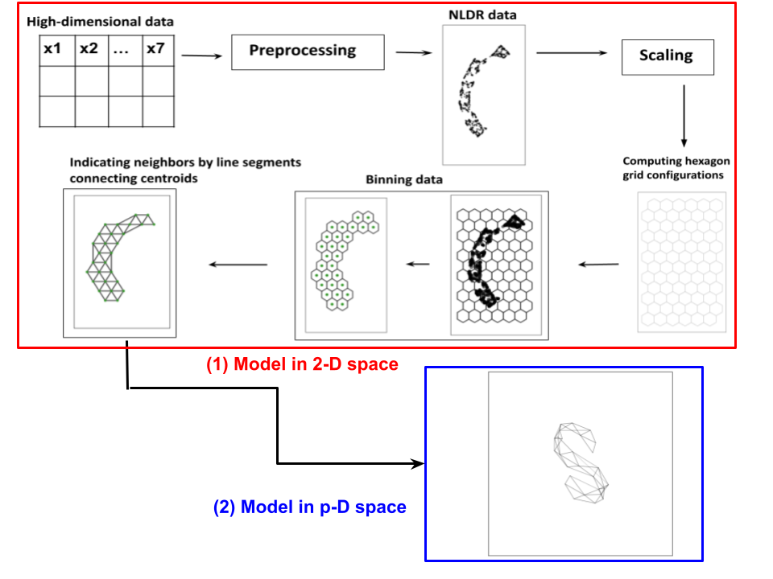

Nonlinear dimension reduction (NLDR) techniques provide a low-dimensional representation of high-dimensional data by applying a non-linear transformation. The complexity of the transformations and data structure can create wildly different representations depending on the method and parameter choices. It is difficult to determine whether any are accurate, which is best, or whether they have missed structure. To help assess the NLDR and decide on which, if any, is best, we have developed an algorithm to create a model that is then used to display as a wireframe in high dimensions. The quollr package provides functions to implement the algorithm.
Installation
You can install the released version of quollr from CRAN with:
install.packages("quollr") The development version from GitHub with:
install.packages("remotes")
remotes::install_github("JayaniLakshika/quollr")Usage
Our approach involves dividing the high-dimensional data set into two parts: a training set to construct the model and a test set to generate model summaries. To implement our approach, first we use a 2D embedding data set as the initial point. The output of our algorithm is a tour that displays the model overlaid on high-dimensional data. Our algorithm comprises two main phases:(1) generate the model in the 2D space, and (2) generate the model in the high-dimensional space. This methodology is available in this package.

Roadmap
- To learn more about the data preprocessing: 1. Data preprocessing
- To create the full hexagonal grid: 2. Algorithm for binning data
- To learn more about the main steps of the algorithm: 3. Algorithm for visualising the model overlaid on high-dimensional data
- To generate model summaries: 4. Generating model summaries
- Quick start guide: 5. Quick start
- To select the optimal bin width: 6. Selecting the best bin width
- To select the most reasonable NLDR layout: 7. Selecting the best fit
Copyright
This package is licensed under the MIT license.